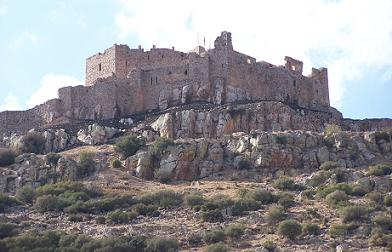
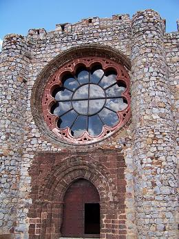

|
El yacimiento de Calatrava la Vieja se encuentra a unos 5km.
al norte de Carrión de Calatrava.
| Su poblamiento se remonta a
la época prerromana y en que se observa la sucesiva superposición de diferentes
períodos medievales -Omeya, Taifa, Almorávide, Cristiana, Almohade y finalmente
Cristiana.
Fundada durante el período
omeya, citada por
árabes con el nombre de Qal'at Rabah, situándola, junto al camino principal que
comunicaba Toledo con Córdoba. Prácticamente destruida por los toledanos en el 853,
y
reconstruida el año siguiente por al-Hakam, convirtiéndose en la
cabeza de una amplia zona de la Mancha y en el más importante punto de apoyo del
poder central Cordobés.
Con la llegada del nuevo
poder almorávide que se implanta en Al-Andalus
se convierte en el más importante núcleo islámico frente al Toledo cristiano.
|
Fue conquistada por Alfonso VII en 1147, pasando a ser la población cristiana más
avanzada e importante frente a Al-Andalus. Sancho III en 1.158 la entregó a la Orden del Cister, fundándose
la primera Orden Militar Hispana, que adoptó el nombre
castellanizado del propio lugar: Calatrava.
Perdida en 1195, como consecuencia de la batalla de Alarcos y reconquistada en 1212 durante la campaña de las Navas de Tolosa. Nunca más recobró su antigua prosperidad. La sede de la
Orden fue trasladada más al sur, en el lugar que vendría a denominarse
Calatrava la Nueva.
CALATRAVA LA NUEVA
|
 |
Situado en lo alto del cerro “Alacranejo” en la carretera de Calzada de
Calatrava a Puertollano. En el término municipal de Aldea del Rey, se alza El
Sacro Castillo – Convento de Calatrava La Nueva.
Frente al Castillo de
Salvatierra flanquea una de las más importantes vías naturales que cruzan Sierra
Morena y unen la meseta con el Valle del Guadalquivir.
Fue fundada sobre el Castillo
de Dueñas, y a partir de 1217 se convirtió en cabeza de la Orden de Calatrava.
|
|
Consta tres recintos amurallados
y ocupa una superficie de más de 46.000 m2, con una antemuralla que cierra su escalera de acceso y una puerta en
codo que dificultaría el ataque frontal.
A lo largo de los siglos fue objeto de distintos añadidos y reformas, las más
importantes en época de los Reyes Católicos y Felipe II.
En el interior del recinto amurallado destacan varios edificios y espacios:
el Castillo; el Campo de los Mártires donde se enterraron los
restos de los caballeros calatravos, La sala Capitular y su Iglesia al norte del Castillo.
Es un ejemplo de arquitectura
cisterciense, con características góticas,
románicas y mudéjar.
|
 |
|